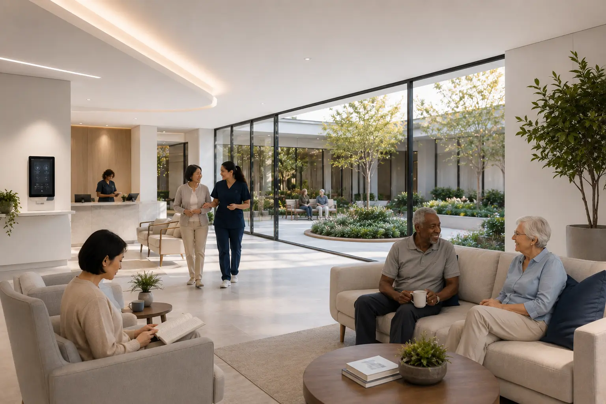
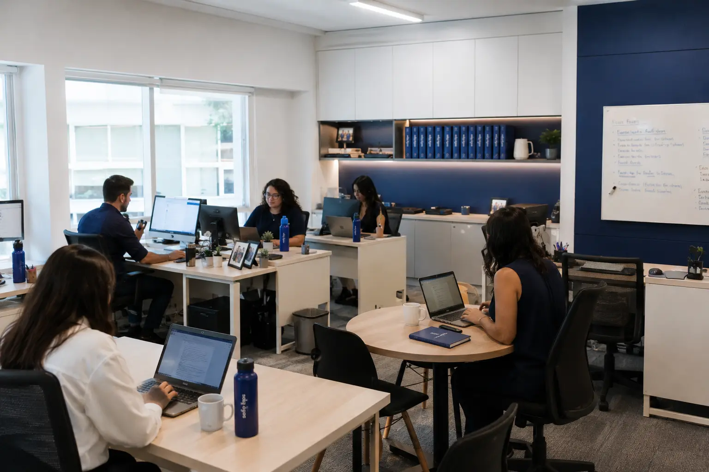

Uma análise honesta — com números reais, comparativos detalhados e a pergunta que nenhuma família deveria ter medo de fazer.

Existe um momento que muitas famílias conhecem bem. Um momento silencioso, cheio de culpa que ninguém pediu para sentir. Quando a realidade chega antes da gente estar pronto para ela.
Uma queda. Um diagnóstico. Uma noite em que você percebe que não consegue estar em dois lugares ao mesmo tempo — e que a pessoa que você mais ama precisa de um cuidado que vai além do que você pode dar sozinho.
E aí vem a pergunta. Tímida. Quase envergonhada. "Quanto custa uma casa de repouso?"
Essa diferença muda tudo. Porque quando as famílias somam os custos reais do cuidado em casa — com rigor e honestidade — a conta quase sempre surpreende. E não do jeito que elas esperavam.
Este guia existe para fazer essa análise com você. Sem omissões, sem romantismo e sem pressão de nenhum tipo.
O preço médio de uma casa de repouso no Brasil pode variar entre R$ 3.000 e R$ 20.000 por mês, dependendo do grau de dependência, da localização e da estrutura do residencial.
A SAFE ILPIS consegue um desconto exclusivo de R$ 500/mês para você em mais de 300 residenciais credenciados e qualificados — todos avaliados pela nossa equipe.
A maioria das famílias subestima o custo real do cuidado domiciliar porque conta apenas a cuidadora. Mas a conta completa inclui moradia, encargos trabalhistas, alimentação, adaptações e — o fator que mais pesa — os turnos descobertos.
Vamos montar os três cenários mais comuns, com os valores atualizados para 2026:
Contratar uma cuidadora parece simples. Mas quando a contratação é legal — e ela deve ser — os encargos trabalhistas mudam a conta significativamente. Abaixo, o cálculo real com base no piso salarial da categoria em São Paulo em 2026:
| Item | Referência | Valor estimado |
|---|---|---|
| Piso salarial cuidadora SP | Convenção coletiva 2026 | R$ 1.900 |
| Cesta básica | Benefício da categoria | R$ 150 |
| INSS patronal (20%) | CLT Art. 22 | R$ 380 |
| FGTS (8%) | Lei 8.036/90 | R$ 152 |
| 13.º salário (prov.) | 1/12 ao mês | R$ 158 |
| Férias + 1/3 (prov.) | CLT Art. 129 | R$ 211 |
| Vale-transporte | Estimativa SP | R$ 220 |
| ⚠️ Noites, fins de semana e feriados: não cobertos | Custo extra | |
| Total operacional estimado (cuidadora) | R$ 3.180 | |
Atenção: os valores acima consideram apenas o turno diurno, de segunda a sexta. Fins de semana, noites e feriados exigem cuidadoras adicionais ou escala 12×36 — o que pode dobrar ou triplicar esse custo. Veja o comparativo completo em Quanto custa uma cuidadora em casa em 2026.
"Escolher um residencial não é abandonar alguém.— SAFE ILPIS, equipe de orientação familiar
É reconhecer que cuidado de verdade exige estrutura
que nenhuma família consegue replicar sozinha."
O principal equívoco ao pesquisar preços de residenciais é comparar valores sem considerar o que muda entre eles. A mensalidade não sobe por "luxo" — sobe pela complexidade do cuidado necessário.
A RDC 283/2005 da Anvisa define três graus de dependência para pessoas em ILPIs. Nós incluímos o Grau 0 para ilustrar a realidade de quem ainda não precisa de cuidado intensivo — mas que, em isolamento, corre riscos. Para entender em qual grau seu familiar se enquadra, acesse Como avaliar o grau de dependência de uma pessoa.
Pessoa 100% independente e lúcida. Conduz a própria vida com segurança — dirige, sai sozinha, gerencia sua rotina sem necessidade de suporte externo.
Precisa de supervisão e auxílio parcial. Apresenta algum risco cognitivo ou de mobilidade — necessita de acompanhamento durante o dia para medicações, alimentação ou locomoção segura.
Necessita de assistência contínua. Pode fazer uso de cadeira de rodas, apresentar incontinência e precisar de apoio direto na higiene, alimentação e rotina diária. Não pode ficar sem acompanhamento.
Perfil acamado com necessidades clínicas complexas. Pode incluir uso de sonda de alimentação, bolsa de colostomia ou cuidados com lesões por pressão. Exige técnico de enfermagem, assistência intensiva e monitoramento multidisciplinar.
Selecione o grau de dependência e veja a comparação estimada em tempo real. Todos os valores são médias estimadas e podem variar conforme a região, o perfil clínico, a estrutura do residencial e a complexidade do cuidado.
A localização de um residencial importa — mas não da maneira que as famílias costumam pensar. Residenciais em regiões com menor custo operacional conseguem oferecer mais espaço, áreas externas e estrutura ampliada pelo mesmo valor que, na capital central, compraria apenas um quarto reduzido.
Estrutura urbana completa, excelente mobilidade e residenciais com boa relação entre custo e qualidade de atendimento.
Bairro tranquilo dentro da capital, com fácil acesso para familiares e opções de residenciais bem estruturados.
Espaço amplo, jardins e áreas verdes. Ótimo custo-benefício sem abrir mão da proximidade com a capital.
Natureza preservada, ar mais limpo e residenciais que oferecem mais espaço com mensalidades acessíveis.
Próximo ao polo universitário e hospitalar, com boa cobertura de saúde e residenciais bem equipados.
Opção crescente para famílias que buscam tranquilidade, espaço e custo operacional mais equilibrado.
Existe uma diferença enorme entre residenciais no Brasil. Alguns são bem estruturados, têm equipe treinada, protocolos claros e relatórios frequentes para a família. Outros funcionam na informalidade — sem registro adequado, sem profissionais habilitados, sem qualquer fiscalização.
Escolher pelo menor preço, sem verificar o que está por trás, é um dos erros mais comuns e mais perigosos que as famílias cometem nesse momento.
Use nosso Checklist completo para visitar uma casa de repouso antes de qualquer decisão. De forma resumida, os pontos críticos são:
Veja também: Diferença entre asilo e casa de repouso moderna — um artigo que desfaz os principais mitos sobre os residenciais sênior de hoje.
A SAFE ILPIS nasceu para resolver um problema concreto: famílias que precisam de orientação especializada, no momento mais difícil — mas não sabem a quem recorrer sem ter que pagar por isso.
Construímos uma rede de mais de 300 residenciais parceiros em São Paulo e Grande SP, todos avaliados presencialmente. Conhecemos os espaços, as equipes e os processos antes de indicar qualquer um deles.
Quando uma família nos contata, fazemos uma análise do perfil — grau de dependência, localização desejada, faixa de orçamento e necessidades clínicas — e apresentamos as opções que fazem sentido para aquela situação específica.
Não cobramos nada das famílias. Nossa remuneração vem dos residenciais parceiros, o que garante total isenção na indicação.

Moradia permanente com cuidado contínuo adaptado ao perfil da pessoa.
Ambientes modernos com equipe especializada e programação de atividades.
Para períodos de recuperação, descanso da família ou adaptação ao modelo.
Dia completo no residencial — atividades, alimentação e cuidado durante o expediente.
Indicação de profissionais qualificadas para atendimento domiciliar.
Conte para a gente o que a sua família precisa.
Não há pressa. Não há custo. Só orientação honesta.